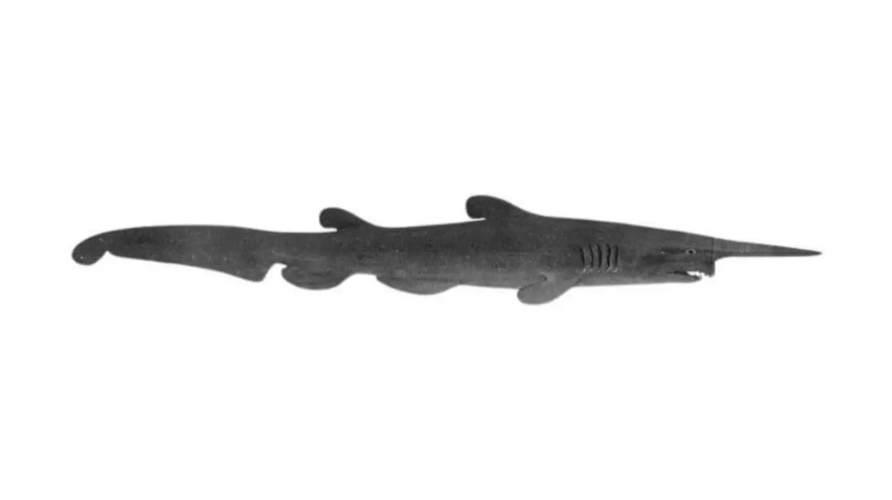

The goblin shark can be found in the pacific, atlantic,and indian oceans, but the goblin shark is mainly in japan and austrailia. the goblin shark is typically in deep waters of about 1200 meters deep.

image from anamilia.bio
The goblin shark has a flabby body, a snout that looks like a shovel, and a mouth that can retract to be under the eye or by the nose